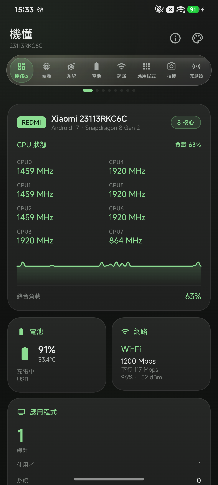
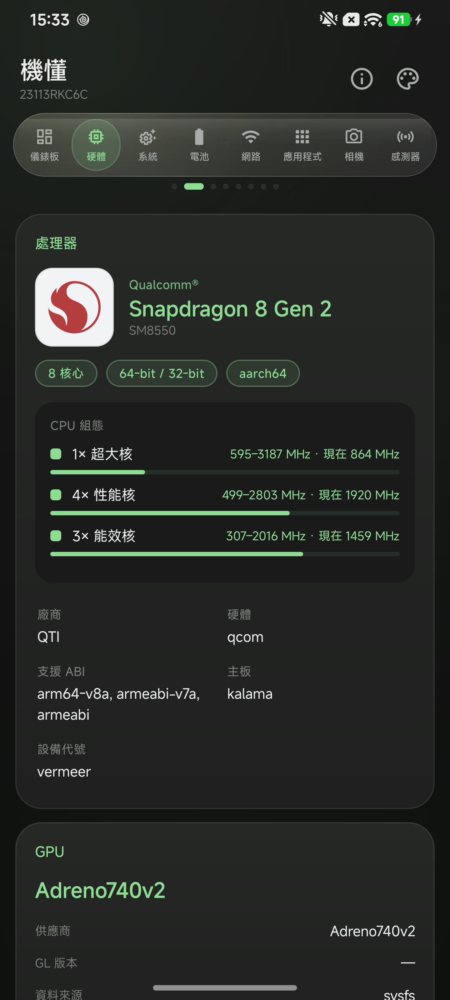

OVERVIEW / 01
重要的事，
一眼就知道。
CPU 各核頻率與負載波形、電池、網路、記憶體和儲存狀態，集中在同一個清晰視野裡。
- 即時 CPU 負載曲線
- 電池與網路摘要
- CPU / GPU 效能評估與桌面小工具
YOUR DEVICE, DEMYSTIFIED.
從處理器到感測器，把藏在系統裡的資訊，變成你看得懂、用得上的即時狀態。
v1.18.0 · 約 18 MB · Android 7.0 以上
目前提供測試版 APK，安裝前請允許此來源。

打開，就看懂。
01 / CAPABILITIES
八個獨立面板，左右滑動即可切換。
即時更新，也保有剛剛好的秩序。
OVERVIEW / 01
CPU 各核頻率與負載波形、電池、網路、記憶體和儲存狀態，集中在同一個清晰視野裡。
02 / APPEARANCE
Material You 動態取色，讓介面自然融入桌布。深色、淺色各自講究，連玻璃導航都保留一致質感。
這裡是網頁預覽；App 內可跟隨系統，或獨立選擇模式與色彩。

03 / IN DETAIL
04 / LOCALIZATION
預設跟隨系統，也能在 App 內獨立選擇。
十種介面語言，規格與單位始終清楚。
不需要帳號，不會為了查看資訊而要求無關權限。應用列表先取得你的同意；定位僅用於系統要求的 Wi-Fi 名稱讀取。
READY TO LOOK CLOSER?
Android 7.0+ · v1.18.0 · 約 18 MB
下載測試版 APK 後，請依 Android 指示允許瀏覽器或檔案管理員「安裝未知應用程式」。部分功能會在使用時才要求權限；下載測速約消耗 10–35 MB 流量。